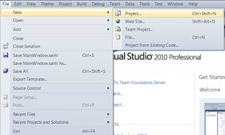
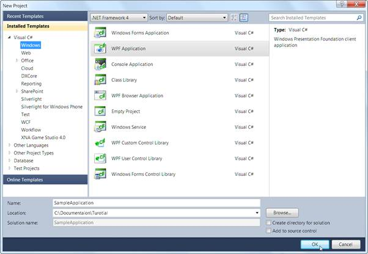
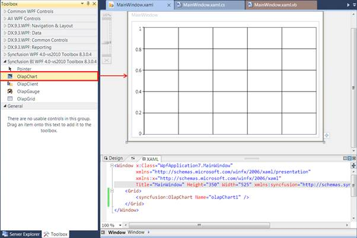

The steps to create a new WPF application in Visual Studio 2008 are as follows:
1. Open Visual Studio IDE (either 2008 or 2010. In this sample, we have used visual studio 2010). From the File menu, select New Project.

Figure 7: File -> New -> Project
2. In the New Project Dialog box, click the Windows tab and select WPF Application.
3. Then, type a name for the application and click OK. In this example, the name of the application is typed as SampleApplication.

Figure 8: New Project Dialog – WPF Application
4. A new WPF application is created. Now, add the OlapChart control to this application.
The steps to add the OlapChart to the application are as follows:
1. From the Visual Studio Toolbox, drag and drop the OlapChart under the Syncfusion BI WPF band. It will automatically add the required referenced assemblies.

Figure 9: OlapChart added from the Toolbox
2. Alternatively, you can add the OlapChart to an application by using any of the following code snippets:
|
[XAML]
<syncfusion:OlapChart Name="olapChart1" /> |
|
[C#]
OlapChart olapChart = new OlapChart(); |
|
[VB]
Dim olapChart As OlapChart = New OlapChart() |
3. Then, ensure that the following assemblies are included in the project reference:
· Syncfusion.Chart.WPF
· Syncfusion.Core
· Syncfusion.Olap.Base
· Syncfusion.OlapChart.WPF
· Syncfusion.OlapShared.WPF
· Syncfusion.Shared.WPF
4. Include the following namespaces:
· Syncfusion.Olap.Reports
· Syncfusion.Olap.Manager
5. Declare a member variable for OlapDataManager, as shown below.
|
[C#]
private OlapDataManager olapDataManager; |
|
[VB]
Private olapDataManager As OlapDataManager |
6. In the window’s default constructor include the following codes, to initialize the connection:
|
[C#]
string connectionString = @"Data source=.;Initial Catalog=Adventure Works DW";
// Created connection is assigned to data manager if (connectionString != "") this.olapDataManager = new OlapDataManager(connectionString); |
|
[VB]
Dim connectionString As String = "Data source=.;Initial Catalog=Adventure Works DW"
' Created connection is assigned to data manager If connectionString <> "" Then Me.olapDataManager = New OlapDataManager(connectionString) End If |
7. Include the following method, which contains a simple report created from the Adventure works cube:
|
[C#]
private OlapReport SimpleDimensions()
|
|
[VB]
Private Function SimpleDimensions() As OlapReport |
8. In the window’s loaded event include the following code snippet, to bind the report with the control:
|
[C#]
if (this.olapDataManager != null)
|
|
[VB]
If olapDataManager IsNot Nothing Then
|
9. Run the application.